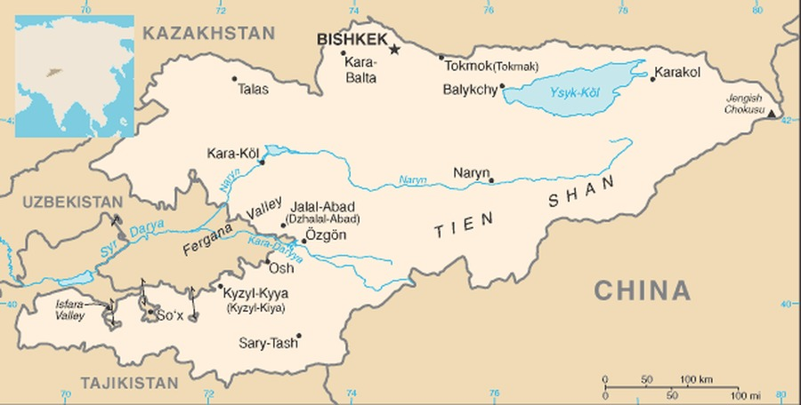

Область Кыргызстана сделана с помощью shape="poly" по контуру реальной политической карты (источник: CIA World Factbook, Wikimedia Commons, общественное достояние). Переход не выполняется, используется nohref.

Вернуться на главную